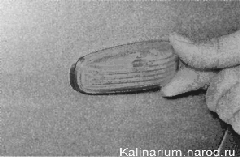
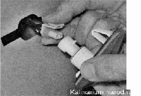
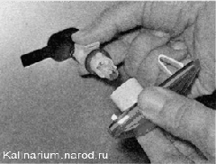
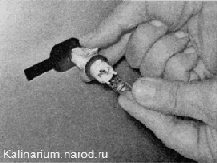

Боковой указатель поворота - снятие, замена лампы и установкаПоследовательность выполнения 1. Подготавливаем автомобиль к выполнению работы. Снимая указатель, не прилагайте чрезмерных усилий во избежание поломки пружинного фиксатора указателя, выполненного из пластмассы. 2. Аккуратно сдвинув боковой указатель поворота вместе с уплотнительной прокладкой вперед на 2—3 мм, отводим заднюю часть указателя от крыла (при этом выводим из зацепления скобообразный выступ указателя). 
При необходимости снятия указателя, отсоединяем колодку проводов от патрона лампы.  3. Отводим указатель от крыла и извлекаем патрон вместе с лампой из корпуса указателя. 
4. Вынимаем неисправную лампу из патрона. 
5. Устанавливаем новую лампу и вставляем патрон с лампой в указатель поворота. 6. Заводим скобообразный выступ указателя за кромку отверстия. Прижимая заднюю часть указателя к крылу, нажимаем на его переднюю часть до защелкивания фиксатора. |